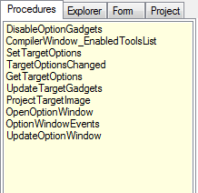
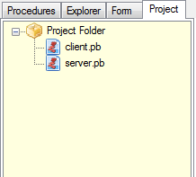
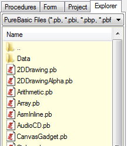
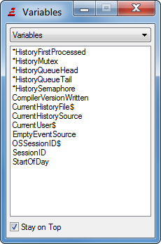
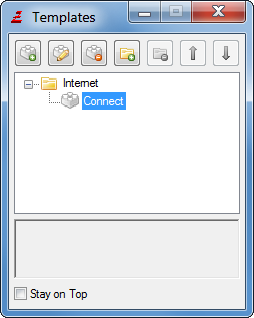
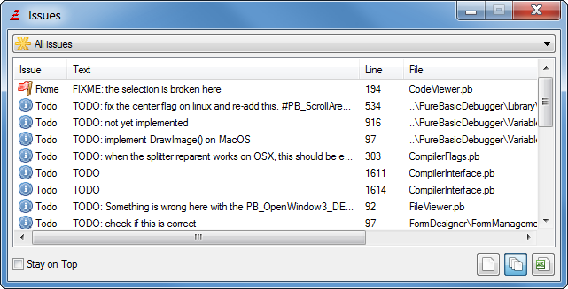
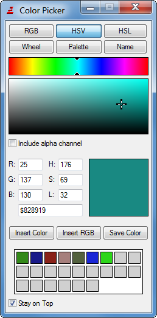
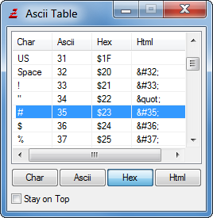
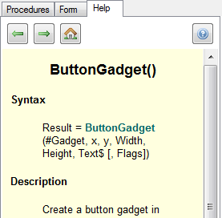

This tool displays a list of all procedures and macros declared in the current source code. By double-clicking on an entry in that list, the cursor automatically jumps to that procedure.Macros will be marked in the list by a "+" sign before the name.
You can also place special comment marks in your code, that will be displayed in the list too. They look like this: ";- <description>". The ; starts a comment, the �-� that follows it immediately defines such a mark.
The description will be shown in the Procedure list, and clicking on it will jump to the line of this mark. Such a comment mark can be distinguished from a Procedure by the "> " that is displayed before it in the procedure list.
The list of procedures can be sorted, and it can display the procedure/macro arguments in the list. For these options, see Configuring the IDE.
Project Panel

This tool displays a tree of all files in the current project. A double-click on a file opens it in the IDE. This allows fast access to all files in the project. A right-click on a file opens a context menu which provides more options:ExplorerOpen - Open the file in the IDE.
Open in FileViewer - Open the file in the FileViewer of the IDE.
Open in Explorer - Open the file in the operating systems file manager.
Add File to Project - Add a new file to the project.
Remove File from Project - Remove the selected file(s) from the project.
Refresh AutoComplete data - Rescan the file for AutoComplete items.


The Explorer tool displays an explorer, from which you can select files and open them quickly with a double-click. PureBasic files (*.pb, *.pbi, *.pbp, *.pbf) will be loaded into the edit area and all other recognized files (text & binary) files will be displayed into the internal File Viewer.Variable Viewer

The variable viewer can display variables, Arrays, lists, Constants, Structures and Interfaces defined in your source code, or any currently opened file. You can configure what exactly it should display in the preferences.Note: The displaying of variables is somewhat limited for now. It can only detect variables explicitly declared with Define, Global, Shared, Protected or Static.
Code Templates

The templates tool allows you to manage a list of small code parts, that you can quickly insert into your source code with a double-click. It allows you to manage the codes in different directories, and put a comment to each code. This tool is perfect to manage small, often used code parts.Issue Browser

The issue browser tool collects comments in the source code that fit a defined format and lists them ordered by priority. It can be used to track which areas of the source code still need to be worked on.Each displayed issue corresponds to one comment in the code. A double-click on the issue shows that code line. Issues can be displayed for the current file, or for multiple files (all open files, or all files that belong to the current project). The issue list can also be exported in CSV format.
To configure the collected issues, see the "Issues" section in the Preferences.
Color Picker

The color picker helps you to find the perfect color value for whatever task you need. The following methods of picking a color are available:RGB: Select a color by choosing red, green and blue intensities.
HSV: Select a color by choosing hue, saturation and value.
HSL: Select a color by choosing hue, saturation and lightness.
Wheel: Select a color using the HSV model in a color wheel.
Palette: Select a color from a predefined palette.
Name: Select a color from a palette by name.
The color selection includes an alpha component, if the "Include alpha channel" checkbox is activated. The individual components (red/green/blue intensities or hue/saturation/lightness) as well as the hexadecimal representation of the current color can be seen and modified in the text fields.
The "Insert Color" button inserts the hexadecimal value of the current color in the source code. The "Insert RGB" button inserts the color as a call to the RGB() or RGBA() function into the code. The "Save Color" button saves the current color to the history area at the bottom. Clicking on a color in the history makes it the current color again.
Character Table

The character table tool displays a table showing the first 256 unicode characters, together with their index in decimal and hex, as well as the corresponding html notation. By double-clicking on any line, this character will be inserted into the source code. With the buttons on the bottom, you can select which column of the table to insert on a double-click.Help Tool

The Help Tool is an alternative viewer for the reference guide. It can be used to view the PureBasic manual side by side with the code. Whether or not the F1 shortcut opens the manual in the tool or as a separate window can be specified in the preferences.